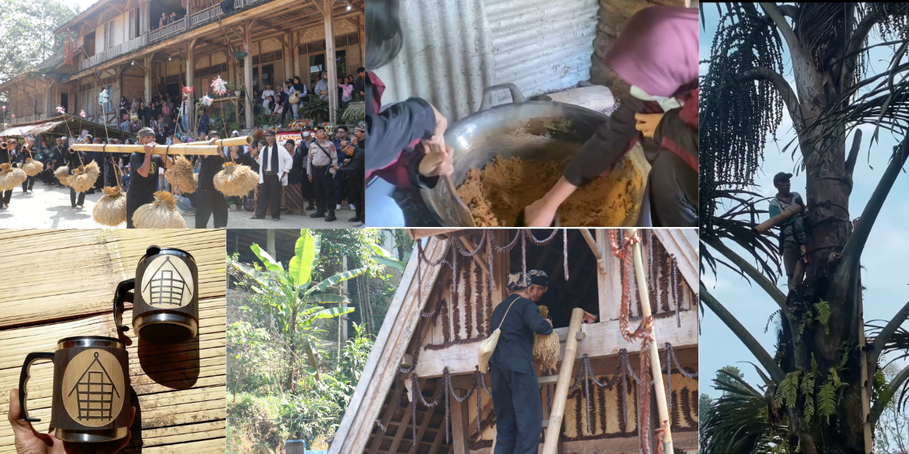

Logo UMKM Desa Cicadas
Logo ini adalah komunitas UMKM Desa Cicadas komunitas bersatu, saling mendukung, dan sukses bersama.
UMKM Desa Cicadas
Desa Cicadas memiliki beragam UMKM yang menjadi tulang punggung perekonomian lokal. Salah satunya adalah produksi gula semut, yang diolah dari nira kelapa secara tradisional, memberikan rasa manis alami dengan kandungan gizi tinggi dan indeks glikemik rendah. Selain itu, terdapat kerajinan ukiran bambu yang menghasilkan berbagai barang dekoratif dan fungsional dengan teknik tradisional, serta pandai besi yang membuat alat-alat berkualitas tinggi. Budaya Seren Taun, sebuah upacara adat tahunan sebagai ungkapan syukur atas hasil panen, juga menjadi bagian penting dari kehidupan desa, menarik perhatian wisatawan dengan tarian, musik gamelan, dan ritual adat yang kaya akan nilai budaya.
UMKM di Desa Cicadas tidak hanya memberikan kontribusi ekonomi tetapi juga berperan dalam pelestarian budaya dan pemberdayaan masyarakat lokal. Produk-produk seperti gula semut, kerajinan bambu, dan alat-alat pandai besi mencerminkan keterampilan tinggi dan warisan tradisi yang kaya.
Dengan terus mendukung dan mengembangkan UMKM ini, diharapkan kesejahteraan masyarakat Desa Cicadas semakin meningkat dan produk-produk unggulan desa ini semakin dikenal luas.
Gula Semut
Gula semut adalah produk olahan dari nira kelapa yang diolah secara tradisional, memberikan rasa manis alami dengan kandungan gizi tinggi seperti vitamin B1, B2, dan B6. Produk ini memiliki indeks glikemik rendah, sehingga lebih aman dikonsumsi oleh mereka yang menjaga kadar gula darah.
Kerajinan Bambu
Kerajinan ukiran bambu di Desa Cicadas menghasilkan berbagai barang dekoratif dan fungsional dengan teknik tradisional. Setiap produk mencerminkan keterampilan tinggi dan keindahan artistik yang unik, dan telah menembus pasar nasional serta internasional.
Pandai Besi
Pandai besi di Desa Cicadas terkenal dengan produk-produk besi berkualitas tinggi seperti alat pertanian, peralatan rumah tangga, dan kerajinan besi lainnya. Dengan menggunakan teknik tradisional, para pandai besi menghasilkan produk yang tahan lama dan memiliki nilai seni tinggi.
Budaya
Budaya Seren Taun adalah upacara adat tahunan sebagai ungkapan syukur atas hasil panen. Upacara ini melibatkan berbagai kegiatan tradisional seperti tarian, musik gamelan, dan ritual adat lainnya, menarik perhatian wisatawan dan memperkaya kehidupan sosial serta spiritual masyarakat desa.